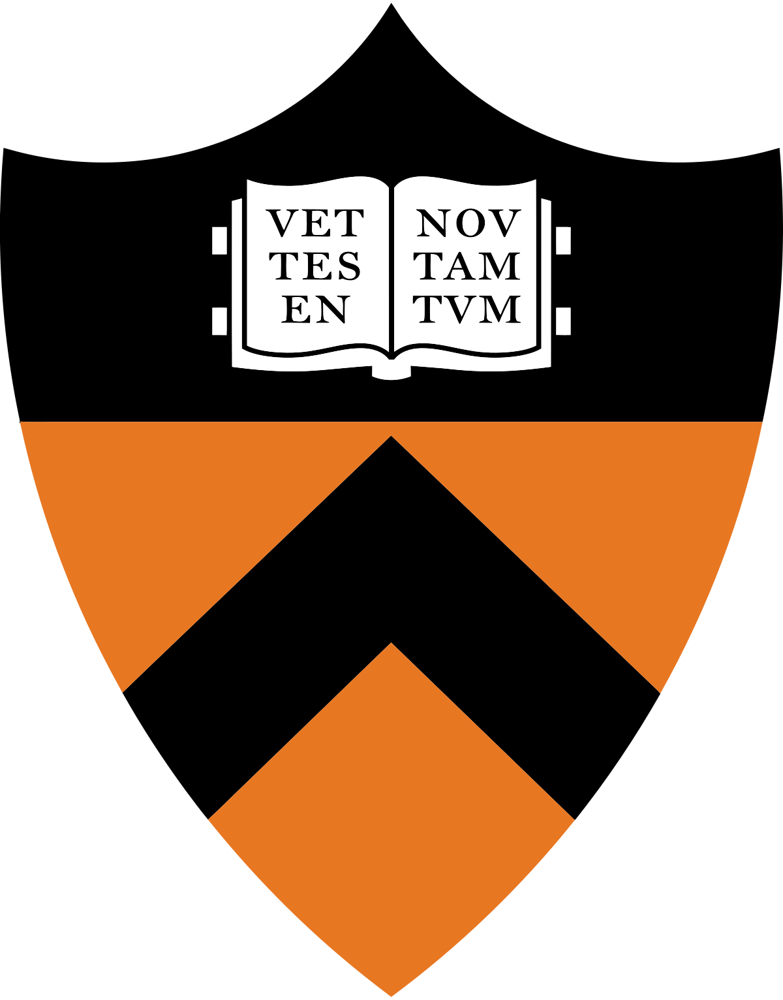

My research focuses on developing novel machine learning and generative modeling
techniques to enable machines to better understand and interact with the physical
world. By integrating physical principles and exploiting inherent symmetries, my
work aims to create more capable and intelligent autonomous systems for complex,
real-world challenges.
Symmetry and Generalization: Leveraging symmetries for
generalizability and sample efficiency, with applications in robotic manipulation
and multi-agent systems.
Physics-Guided Generative Models: Embedding physical principles
into generative models to produce physically plausible and diverse solutions for
scientific tasks.
Some of my early work also focused on domain adaptation and generalization,
building models that can robustly adapt to new tasks and domains.
We introduce LEGO, a symmetry-aware graph neural network framework that enables sample-efficient, scalable, and generalizable swarm robot control across diverse team sizes and environments.
Grasp2Grasp enables simulation-free, vision-based translation of dexterous grasps across robot hands using Schrödinger Bridges with physics-informed costs for stable, functionally aligned grasps.
GAGrasp uses a geometric algebra diffusion model to generate robust, physically plausible dexterous grasps that are naturally equivariant to an object's pose.
We introduce VDPG, a method that adapts large models to new visual domains at test-time using only a few unlabeled images to generate a domain-specific prompt that guides the model's features.
This paper presents Fast-Grasp'D, a differentiable simulator that rapidly generates Grasp'D-1M, a large dataset of stable, contact-rich, multi-finger grasps for robotic learning.
We propose Meta-DMoE, a framework that adapts to domain shifts by using a meta-learned aggregator to distill knowledge from specialized expert models into a student network for fast test-time adaptation.
Education

Princeton University
Ph.D. in Mechanical and Aerospace Engineering (Robotics Track)
2023.09 - Present
cGPA: 4.0
University of Toronto
B.A.Sc. in Engineering Science with High Honours
Major in Robotics Engineering, Minor in Artificial Intelligence
2018.09 - 2023.06
cGPA: 3.81
{kind=link}